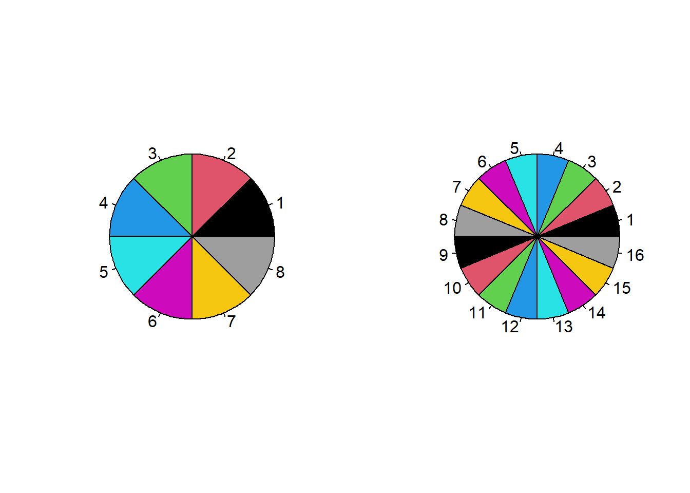
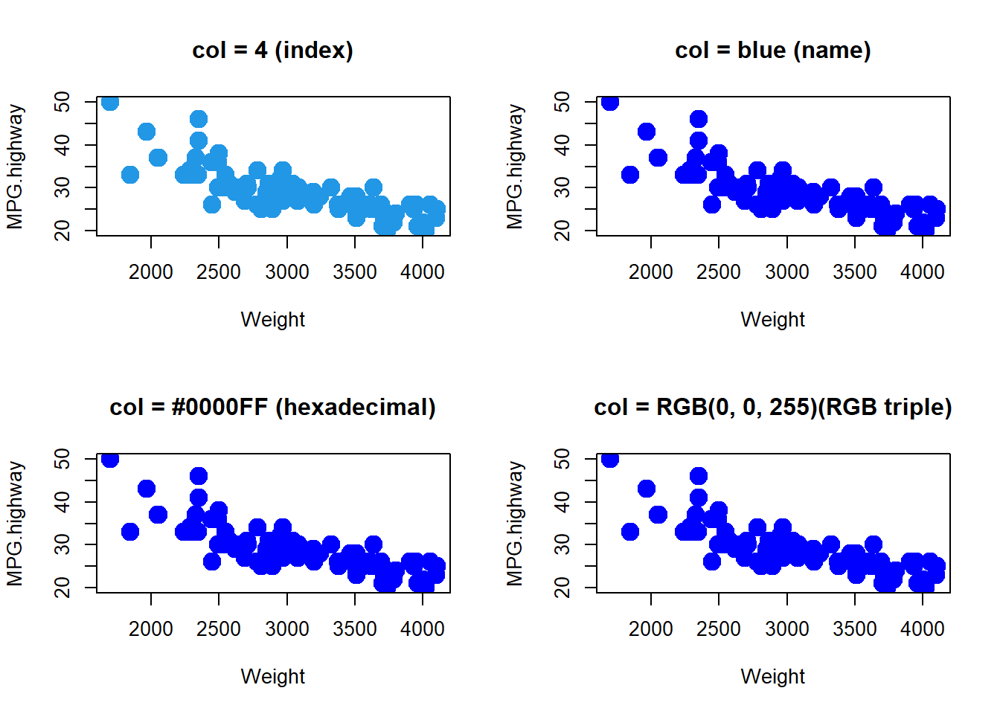
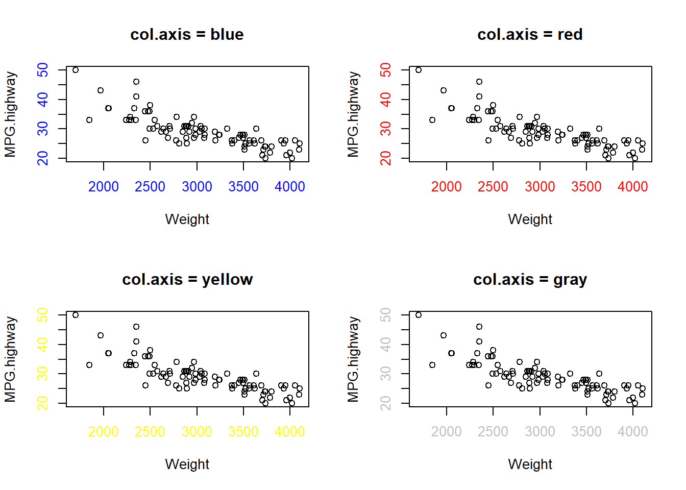
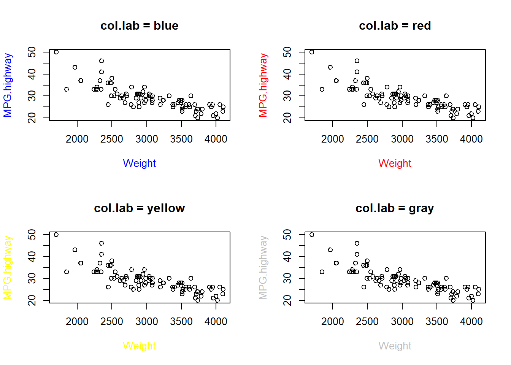
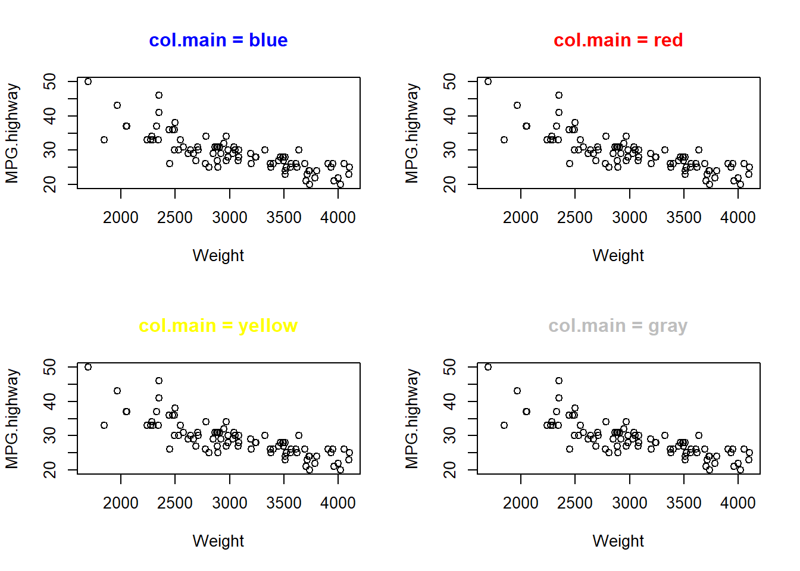
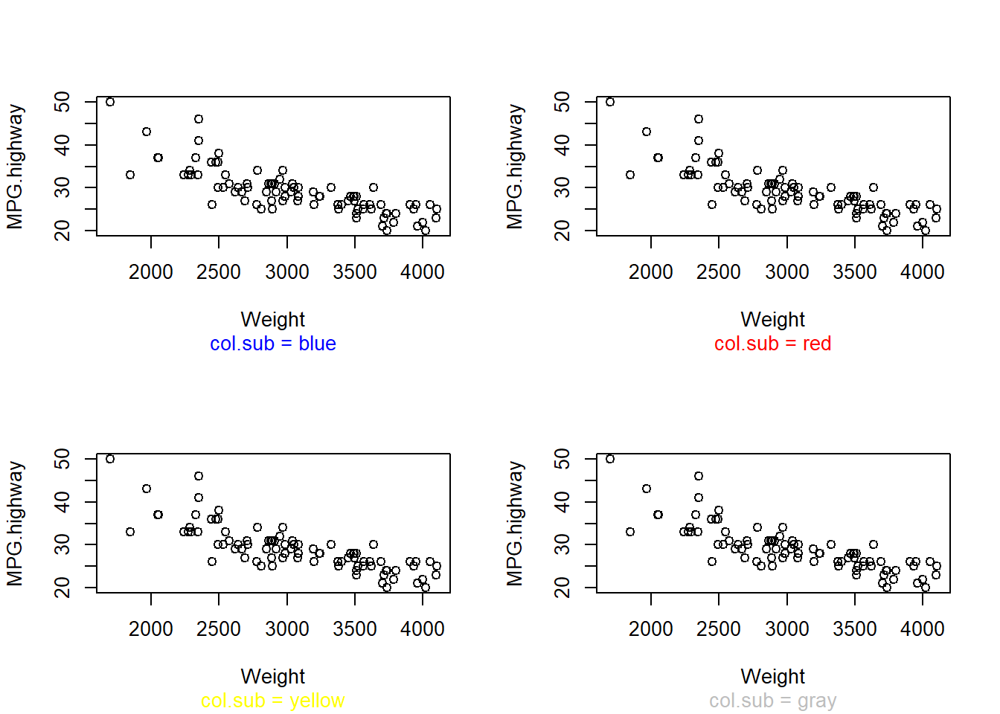
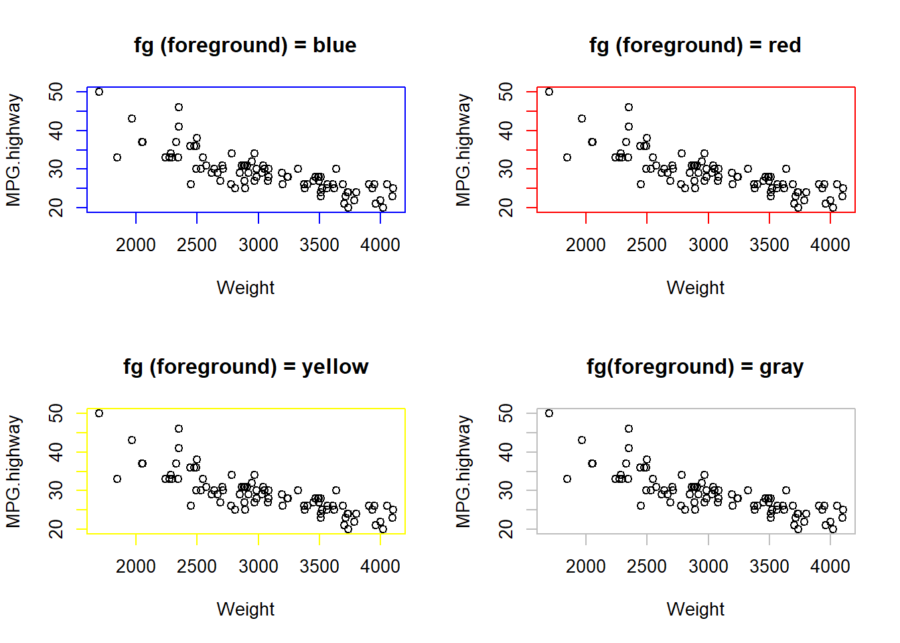
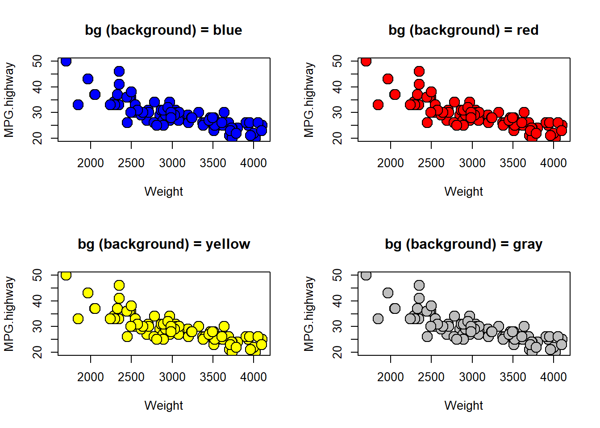

21.3 색깔 (colors) : col, col.axis, col.lab, col.main, col.sub, fg, bg
이번 절에서는 그래프 모수 중에서 색깔(col)을 설정하는 방법에 대해서 알아보겠습니다.
[ 색 관련 모수 별 기능 설명 ]
| 색 관련 모수(parameters of color) | 설명 |
|---|---|
col |
기호, 선, 문자 등의 색깔을 디폴트로 지정 (default plotting color) |
col.axis |
축의 색 지정 (color for axis annotation) |
col.lab |
x축과 y축의 레이블 색 지정 (color for x and y labels) |
col.main |
제목 색 지정 (color for main title) |
col.sub |
부제목의 색 지정 (color for sub titles) |
fg |
그래프 테두리 색 지정 (color for foreground) |
bg |
그래프 기호의 배경 색 지정 (color for background) |
아마도 대부분은 col 모수를 주로 사용하고 나머지 색상 관련 모수는 거의 사용하지 않을 듯 합니다만, R에서는 사용자가 원하면 거의 모든 부분의 색상을 원하는대로 설정할 수 있는 극강의 자유도를 제공합니다.
21.3.1 기호, 선, 문자 등의 디폴트 색 지정 (default plotting color) : col
R에서 지원하는 색의 종류에는 657개가 있습니다. colors() 함수를 사용하면 657개 전체 색 리스트를 볼 수 가 있습니다.
##-------------------------------
## Graphical parameters : color
##-------------------------------
length(colors())## [1] 657colors()## [1] "white" "aliceblue" "antiquewhite"
## [4] "antiquewhite1" "antiquewhite2" "antiquewhite3"
## [7] "antiquewhite4" "aquamarine" "aquamarine1"
## [10] "aquamarine2" "aquamarine3" "aquamarine4"
## [13] "azure" "azure1" "azure2"
## [16] "azure3" "azure4" "beige"
## [19] "bisque" "bisque1" "bisque2"
## [22] "bisque3" "bisque4" "black"
## [25] "blanchedalmond" "blue" "blue1"
## [28] "blue2" "blue3" "blue4"
## [31] "blueviolet" "brown" "brown1"
## [34] "brown2" "brown3" "brown4"
## [37] "burlywood" "burlywood1" "burlywood2"
## [40] "burlywood3" "burlywood4" "cadetblue"
## [43] "cadetblue1" "cadetblue2" "cadetblue3"
## [46] "cadetblue4" "chartreuse" "chartreuse1"
## [49] "chartreuse2" "chartreuse3" "chartreuse4"
## [52] "chocolate" "chocolate1" "chocolate2"
## [55] "chocolate3" "chocolate4" "coral"
## [58] "coral1" "coral2" "coral3"
## [61] "coral4" "cornflowerblue" "cornsilk"
## [64] "cornsilk1" "cornsilk2" "cornsilk3"
## [67] "cornsilk4" "cyan" "cyan1"
## [70] "cyan2" "cyan3" "cyan4"
## [73] "darkblue" "darkcyan" "darkgoldenrod"
## [76] "darkgoldenrod1" "darkgoldenrod2" "darkgoldenrod3"
## [79] "darkgoldenrod4" "darkgray" "darkgreen"
## [82] "darkgrey" "darkkhaki" "darkmagenta"
## [85] "darkolivegreen" "darkolivegreen1" "darkolivegreen2"
## [88] "darkolivegreen3" "darkolivegreen4" "darkorange"
## [91] "darkorange1" "darkorange2" "darkorange3"
## [94] "darkorange4" "darkorchid" "darkorchid1"
## [97] "darkorchid2" "darkorchid3" "darkorchid4"
## [100] "darkred" "darksalmon" "darkseagreen"
## [103] "darkseagreen1" "darkseagreen2" "darkseagreen3"
## [106] "darkseagreen4" "darkslateblue" "darkslategray"
## [109] "darkslategray1" "darkslategray2" "darkslategray3"
## [112] "darkslategray4" "darkslategrey" "darkturquoise"
## [115] "darkviolet" "deeppink" "deeppink1"
## [118] "deeppink2" "deeppink3" "deeppink4"
## [121] "deepskyblue" "deepskyblue1" "deepskyblue2"
## [124] "deepskyblue3" "deepskyblue4" "dimgray"
## [127] "dimgrey" "dodgerblue" "dodgerblue1"
## [130] "dodgerblue2" "dodgerblue3" "dodgerblue4"
## [133] "firebrick" "firebrick1" "firebrick2"
## [136] "firebrick3" "firebrick4" "floralwhite"
## [139] "forestgreen" "gainsboro" "ghostwhite"
## [142] "gold" "gold1" "gold2"
## [145] "gold3" "gold4" "goldenrod"
## [148] "goldenrod1" "goldenrod2" "goldenrod3"
## [151] "goldenrod4" "gray" "gray0"
## [154] "gray1" "gray2" "gray3"
## [157] "gray4" "gray5" "gray6"
## [160] "gray7" "gray8" "gray9"
## [163] "gray10" "gray11" "gray12"
## [166] "gray13" "gray14" "gray15"
## [169] "gray16" "gray17" "gray18"
## [172] "gray19" "gray20" "gray21"
## [175] "gray22" "gray23" "gray24"
## [178] "gray25" "gray26" "gray27"
## [181] "gray28" "gray29" "gray30"
## [184] "gray31" "gray32" "gray33"
## [187] "gray34" "gray35" "gray36"
## [190] "gray37" "gray38" "gray39"
## [193] "gray40" "gray41" "gray42"
## [196] "gray43" "gray44" "gray45"
## [199] "gray46" "gray47" "gray48"
## [202] "gray49" "gray50" "gray51"
## [205] "gray52" "gray53" "gray54"
## [208] "gray55" "gray56" "gray57"
## [211] "gray58" "gray59" "gray60"
## [214] "gray61" "gray62" "gray63"
## [217] "gray64" "gray65" "gray66"
## [220] "gray67" "gray68" "gray69"
## [223] "gray70" "gray71" "gray72"
## [226] "gray73" "gray74" "gray75"
## [229] "gray76" "gray77" "gray78"
## [232] "gray79" "gray80" "gray81"
## [235] "gray82" "gray83" "gray84"
## [238] "gray85" "gray86" "gray87"
## [241] "gray88" "gray89" "gray90"
## [244] "gray91" "gray92" "gray93"
## [247] "gray94" "gray95" "gray96"
## [250] "gray97" "gray98" "gray99"
## [253] "gray100" "green" "green1"
## [256] "green2" "green3" "green4"
## [259] "greenyellow" "grey" "grey0"
## [262] "grey1" "grey2" "grey3"
## [265] "grey4" "grey5" "grey6"
## [268] "grey7" "grey8" "grey9"
## [271] "grey10" "grey11" "grey12"
## [274] "grey13" "grey14" "grey15"
## [277] "grey16" "grey17" "grey18"
## [280] "grey19" "grey20" "grey21"
## [283] "grey22" "grey23" "grey24"
## [286] "grey25" "grey26" "grey27"
## [289] "grey28" "grey29" "grey30"
## [292] "grey31" "grey32" "grey33"
## [295] "grey34" "grey35" "grey36"
## [298] "grey37" "grey38" "grey39"
## [301] "grey40" "grey41" "grey42"
## [304] "grey43" "grey44" "grey45"
## [307] "grey46" "grey47" "grey48"
## [310] "grey49" "grey50" "grey51"
## [313] "grey52" "grey53" "grey54"
## [316] "grey55" "grey56" "grey57"
## [319] "grey58" "grey59" "grey60"
## [322] "grey61" "grey62" "grey63"
## [325] "grey64" "grey65" "grey66"
## [328] "grey67" "grey68" "grey69"
## [331] "grey70" "grey71" "grey72"
## [334] "grey73" "grey74" "grey75"
## [337] "grey76" "grey77" "grey78"
## [340] "grey79" "grey80" "grey81"
## [343] "grey82" "grey83" "grey84"
## [346] "grey85" "grey86" "grey87"
## [349] "grey88" "grey89" "grey90"
## [352] "grey91" "grey92" "grey93"
## [355] "grey94" "grey95" "grey96"
## [358] "grey97" "grey98" "grey99"
## [361] "grey100" "honeydew" "honeydew1"
## [364] "honeydew2" "honeydew3" "honeydew4"
## [367] "hotpink" "hotpink1" "hotpink2"
## [370] "hotpink3" "hotpink4" "indianred"
## [373] "indianred1" "indianred2" "indianred3"
## [376] "indianred4" "ivory" "ivory1"
## [379] "ivory2" "ivory3" "ivory4"
## [382] "khaki" "khaki1" "khaki2"
## [385] "khaki3" "khaki4" "lavender"
## [388] "lavenderblush" "lavenderblush1" "lavenderblush2"
## [391] "lavenderblush3" "lavenderblush4" "lawngreen"
## [394] "lemonchiffon" "lemonchiffon1" "lemonchiffon2"
## [397] "lemonchiffon3" "lemonchiffon4" "lightblue"
## [400] "lightblue1" "lightblue2" "lightblue3"
## [403] "lightblue4" "lightcoral" "lightcyan"
## [406] "lightcyan1" "lightcyan2" "lightcyan3"
## [409] "lightcyan4" "lightgoldenrod" "lightgoldenrod1"
## [412] "lightgoldenrod2" "lightgoldenrod3" "lightgoldenrod4"
## [415] "lightgoldenrodyellow" "lightgray" "lightgreen"
## [418] "lightgrey" "lightpink" "lightpink1"
## [421] "lightpink2" "lightpink3" "lightpink4"
## [424] "lightsalmon" "lightsalmon1" "lightsalmon2"
## [427] "lightsalmon3" "lightsalmon4" "lightseagreen"
## [430] "lightskyblue" "lightskyblue1" "lightskyblue2"
## [433] "lightskyblue3" "lightskyblue4" "lightslateblue"
## [436] "lightslategray" "lightslategrey" "lightsteelblue"
## [439] "lightsteelblue1" "lightsteelblue2" "lightsteelblue3"
## [442] "lightsteelblue4" "lightyellow" "lightyellow1"
## [445] "lightyellow2" "lightyellow3" "lightyellow4"
## [448] "limegreen" "linen" "magenta"
## [451] "magenta1" "magenta2" "magenta3"
## [454] "magenta4" "maroon" "maroon1"
## [457] "maroon2" "maroon3" "maroon4"
## [460] "mediumaquamarine" "mediumblue" "mediumorchid"
## [463] "mediumorchid1" "mediumorchid2" "mediumorchid3"
## [466] "mediumorchid4" "mediumpurple" "mediumpurple1"
## [469] "mediumpurple2" "mediumpurple3" "mediumpurple4"
## [472] "mediumseagreen" "mediumslateblue" "mediumspringgreen"
## [475] "mediumturquoise" "mediumvioletred" "midnightblue"
## [478] "mintcream" "mistyrose" "mistyrose1"
## [481] "mistyrose2" "mistyrose3" "mistyrose4"
## [484] "moccasin" "navajowhite" "navajowhite1"
## [487] "navajowhite2" "navajowhite3" "navajowhite4"
## [490] "navy" "navyblue" "oldlace"
## [493] "olivedrab" "olivedrab1" "olivedrab2"
## [496] "olivedrab3" "olivedrab4" "orange"
## [499] "orange1" "orange2" "orange3"
## [502] "orange4" "orangered" "orangered1"
## [505] "orangered2" "orangered3" "orangered4"
## [508] "orchid" "orchid1" "orchid2"
## [511] "orchid3" "orchid4" "palegoldenrod"
## [514] "palegreen" "palegreen1" "palegreen2"
## [517] "palegreen3" "palegreen4" "paleturquoise"
## [520] "paleturquoise1" "paleturquoise2" "paleturquoise3"
## [523] "paleturquoise4" "palevioletred" "palevioletred1"
## [526] "palevioletred2" "palevioletred3" "palevioletred4"
## [529] "papayawhip" "peachpuff" "peachpuff1"
## [532] "peachpuff2" "peachpuff3" "peachpuff4"
## [535] "peru" "pink" "pink1"
## [538] "pink2" "pink3" "pink4"
## [541] "plum" "plum1" "plum2"
## [544] "plum3" "plum4" "powderblue"
## [547] "purple" "purple1" "purple2"
## [550] "purple3" "purple4" "red"
## [553] "red1" "red2" "red3"
## [556] "red4" "rosybrown" "rosybrown1"
## [559] "rosybrown2" "rosybrown3" "rosybrown4"
## [562] "royalblue" "royalblue1" "royalblue2"
## [565] "royalblue3" "royalblue4" "saddlebrown"
## [568] "salmon" "salmon1" "salmon2"
## [571] "salmon3" "salmon4" "sandybrown"
## [574] "seagreen" "seagreen1" "seagreen2"
## [577] "seagreen3" "seagreen4" "seashell"
## [580] "seashell1" "seashell2" "seashell3"
## [583] "seashell4" "sienna" "sienna1"
## [586] "sienna2" "sienna3" "sienna4"
## [589] "skyblue" "skyblue1" "skyblue2"
## [592] "skyblue3" "skyblue4" "slateblue"
## [595] "slateblue1" "slateblue2" "slateblue3"
## [598] "slateblue4" "slategray" "slategray1"
## [601] "slategray2" "slategray3" "slategray4"
## [604] "slategrey" "snow" "snow1"
## [607] "snow2" "snow3" "snow4"
## [610] "springgreen" "springgreen1" "springgreen2"
## [613] "springgreen3" "springgreen4" "steelblue"
## [616] "steelblue1" "steelblue2" "steelblue3"
## [619] "steelblue4" "tan" "tan1"
## [622] "tan2" "tan3" "tan4"
## [625] "thistle" "thistle1" "thistle2"
## [628] "thistle3" "thistle4" "tomato"
## [631] "tomato1" "tomato2" "tomato3"
## [634] "tomato4" "turquoise" "turquoise1"
## [637] "turquoise2" "turquoise3" "turquoise4"
## [640] "violet" "violetred" "violetred1"
## [643] "violetred2" "violetred3" "violetred4"
## [646] "wheat" "wheat1" "wheat2"
## [649] "wheat3" "wheat4" "whitesmoke"
## [652] "yellow" "yellow1" "yellow2"
## [655] "yellow3" "yellow4" "yellowgreen"위처럼 text로 색깔 이름만 있으면 알기 어려울 수도 있는데요, Earl F. Glynn 가 657개 색을 각 숫자별로 그리드에 보기 좋게 정리를 해놓았습니다.
[ Color Chart by Earl F. Glynn, Stowers Institute for Medical Research, 24 May 2005 ]
/Lectures/Data_Visualization/DV-2021/images/25611837567E4D6934.png)
* 출처 : http://research.stowers-institute.org/efg/R/Color/Chart/index.htm
R에서 색을 지정하는 방법에는 (1) 숫자(index) 지정방법, (2) 색 이름 (color name) 지정 방법, (3) 16진수 (hexadecimal) 지정 방법, 그리고 (4) RGB 색상표 지정 방법 등의 4가지 방법이 있습니다.
| 숫자 (index) | 색 이름 (color name) | 16진수 (hexadecimal) | RGB triple |
|---|---|---|---|
| 4 | (26번) blue | #0000FF | 0 0 255 |
| NA | (62번) comflowerblue | #6495ED | 100 149 237 |
| NA | (73번) darkblue | #00008B | 0 0 139 |
21.3.1.1 숫자(index)로 지정하는 방법
먼저 숫자(index)로 지정하는 방법은 편하긴 합니다. 그러나, 선택할 수 있는 색은 아래와 같이 8가지로 매우 제한적입니다.
| index | 0 | 1 | 2 | 3 | 4 | 5 | 6 | 7 | 8 |
|---|---|---|---|---|---|---|---|---|---|
| color | 흰색(white) | 검정색(black) | 빨강색(red) | 초록색(green) | 파랑색(blue) | 청록색 (turquoise) | 자홍색(magenta) | 노란색(yellow) | 회색(gray) |
8조각의 파이 차트를 예로 살펴 보겠습니다.
# color by index 1~8
par(mfrow=c(1,2))
pie(rep(1, 8), col = 1:8)
pie(rep(1, 16), col = 1:16)
par(mfrow=c(1,1))21.3.1.2 기타 방법
반면, (2) 이름(color name), (3) 16진법 표기 (hexadecimal), (4) RGB 색상표 (RGB triple) 은 매우 다양한 색상을 선택할 수 있는 장점이 있습니다. 아래는 Earl F. Glynn가 작성한 색상표에서 일부를 화면캡쳐한 내용인데요, 모든 색상표는 아래의 출처에 있는 pdf url에 있습니다.
img
* 출처 : http://research.stowers-institute.org/efg/R/Color/Chart/ColorChart.pdf
파란색(blue)에 대해서 위의 4가지 방법, 즉 (1) 숫자 (index), (2) 색 이름 (color name), (3) 16진수 (hexadecimal), (4) RGB 색상표를 사용해서 R 함수 예를 들어보겠습니다. 파란색(blue)으로 모두 똑같은 결과가 나았습니다.
library(MASS)
## 파란색(blue)을 선택하는 4가지 방법
par(mfrow = c(2,2))
# 방법 1 : index
plot(MPG.highway ~ Weight, Cars93, cex = 2, pch = 19,
col = 4, main = "col = 4 (index)")
# 방법 2 : color name
plot(MPG.highway ~ Weight, Cars93, cex = 2, pch = 19,
col = "blue", main = "col = blue (name)")
# 방법 3 : hexadecimal
plot(MPG.highway ~ Weight, Cars93, cex = 2, pch = 19,
col = "#0000FF", main = "col = #0000FF (hexadecimal)")
# 방법 4 : RGB triple
rgb_1 <- rgb(0, 0, 255, maxColorValue=255)
plot(MPG.highway ~ Weight, Cars93, cex = 2, pch = 19,
col = rgb_1, main = "col = RGB(0, 0, 255)(RGB triple)")
par(mfrow = c(1, 1)) R에서는 색상 관련해서 서로 보완(complementing)되거나 대조를 이루는(contrasting) 색상들을 미리 팔레트 형식으로 정의(defined palettes of colors)해 놓은 것이 있습니다.
예를 들면, rainbow(n), heat.colors(n), terrain.colors(n), topo.colors(n), cm.colors(n) 등이 있습니다.
example(rainbow) 함수를 이용해서 이들 색상표 palettes 를 살펴보겠습니다. 계속 Enter 치면 다음 화면으로 넘어갑니다.
example(rainbow)colorspace 패키지는 팔레트의 선택을 위한 GUI를 제공하고 있습니다. choose_palette() 함수를 호출하면 다음과 같은 윈도우 팝업 창이 나타납니다.
# install.packages("colorspace")
library(colorspace)
choose_palette()
21.3.2 축의 색 지정
x축과 y축의 척도 표기 색상을 지정할 때 col.axis 모수 옵션을 사용합니다. 아래에 x축과 y축 척도 표기 색상으로 파랑색, 빨강색, 노랑색, 회색 등으로 바꿔가면서 그래프를 그려보았습니다.
library(MASS)
## 축의 색 지정 : col.axis
par(mfrow = c(2,2))
plot(MPG.highway ~ Weight, Cars93, cex = 1, pch = 21,
col.axis = "blue", main = "col.axis = blue")
plot(MPG.highway ~ Weight, Cars93, cex = 1, pch = 21,
col.axis = "red", main = "col.axis = red")
plot(MPG.highway ~ Weight, Cars93, cex = 1, pch = 21,
col.axis = "yellow", main = "col.axis = yellow")
plot(MPG.highway ~ Weight, Cars93, cex = 1, pch = 21,
col.axis = "gray", main = "col.axis = gray")
par(mfrow = c(1,1)) 21.3.3 x축과 y축 레이블 색 지정
이번에는 x축과 y의 레이블 색을 지정하는 방법으로 col.lab 모수 옵션을 사용하면 됩니다. 파랑색, 빨강색, 노랑색, 회색으로 x축과 y축의 레이블 색을 설정하는 예를 들어보겠습니다.
library(MASS)
## x축과 y축 레이블 색 지정 : col.lab
par(mfrow = c(2,2))
plot(MPG.highway ~ Weight, Cars93, cex = 1, pch = 21,
col.lab = "blue", main = "col.lab = blue")
plot(MPG.highway ~ Weight, Cars93, cex = 1, pch = 21,
col.lab = "red", main = "col.lab = red")
plot(MPG.highway ~ Weight, Cars93, cex = 1, pch = 21,
col.lab = "yellow", main = "col.lab = yellow")
plot(MPG.highway ~ Weight, Cars93, cex = 1, pch = 21,
col.lab = "gray", main = "col.lab = gray")
par(mfrow = c(1,1)) 21.3.4 제목 색 지정
그래프 제목의 색은 col.main 모수를 이용하여 색을 지정할 수 있습니다. 파랑색, 빨강색, 노랑색, 회색으로 그래프 제목의 색을 설정하는 예를 보겠습니다.
library(MASS)
## 제목 색 지정 : col.main
par(mfrow = c(2, 2))
plot(MPG.highway ~ Weight, Cars93, cex = 1, pch = 21,
col.main = "blue", main = "col.main = blue")
plot(MPG.highway ~ Weight, Cars93, cex = 1, pch = 21,
col.main = "red", main = "col.main = red")
plot(MPG.highway ~ Weight, Cars93, cex = 1, pch = 21,
col.main = "yellow", main = "col.main = yellow")
plot(MPG.highway ~ Weight, Cars93, cex = 1, pch = 21,
col.main = "gray", main = "col.main = gray")
par(mfrow = c(1,1)) 21.3.5 부 제목 색 지정
그래프 부 제목의 색은 col.sub 모수를 이용하여 색을 지정할 수 있습니다. 파랑색, 빨강색, 노랑색, 회색으로 그래프 부 제목의 색을 설정하는 예를 보겠습니다.
library(MASS)
## 부 제목 색 지정 : col.sub
par(mfrow = c(2, 2))
plot(MPG.highway ~ Weight, Cars93, cex = 1, pch = 21,
col.sub = "blue", sub = "col.sub = blue")
plot(MPG.highway ~ Weight, Cars93, cex = 1, pch = 21,
col.sub = "red", sub = "col.sub = red")
plot(MPG.highway ~ Weight, Cars93, cex = 1, pch = 21,
col.sub = "yellow", sub = "col.sub = yellow")
plot(MPG.highway ~ Weight, Cars93, cex = 1, pch = 21,
col.sub = "gray", sub = "col.sub = gray")
par(mfrow = c(1,1)) 21.3.6 그래프 테두리 색 지정
그래프의 전경 색은 fg = 모수를 이용하여 지정할 수 있습니다. 파랑색, 빨강색, 노랑색, 회색으로 그래프의 전경 색을 설정하는 예를 보겠습니다.
library(MASS)
## 그래프 전경 색 지정 : fg
par(mfrow = c(2, 2))
plot(MPG.highway ~ Weight, Cars93, cex = 1, pch = 21,
fg = "blue", main = "fg (foreground) = blue")
plot(MPG.highway ~ Weight, Cars93, cex = 1, pch = 21,
fg = "red", main = "fg (foreground) = red")
plot(MPG.highway ~ Weight, Cars93, cex = 1, pch = 21,
fg = "yellow", main = "fg (foreground) = yellow")
plot(MPG.highway ~ Weight, Cars93, cex = 1, pch = 21,
fg = "gray", main = "fg(foreground) = gray")
par(mfrow = c(1,1)) 21.3.7 그래프 기호의 배경 색 지정
bg는 그래프 기호의 배경색을 채울 때 사용합니다. 아래에 기호 모양 21번 (원)에 파랑색, 빨강색, 노랑색, 회색을 채워보았습니다.
library(MASS)
## 그래프 기호의 배경 색 지정 :bg
par(mfrow = c(2, 2))
plot(MPG.highway ~ Weight, Cars93, cex = 2, pch = 21,
bg = "blue", main = "bg (background) = blue")
plot(MPG.highway ~ Weight, Cars93, cex = 2, pch = 21,
bg = "red", main = "bg (background) = red")
plot(MPG.highway ~ Weight, Cars93, cex = 2, pch = 21,
bg = "yellow", main = "bg (background) = yellow")
plot(MPG.highway ~ Weight, Cars93, cex = 2, pch = 21,
bg = "gray", main = "bg (background) = gray")
par(mfrow = c(1, 1))bg (background color)는 속이 비어있는 pch 21번부터 25번 까지만 사용가능하며, 그 외에는 적용이 안됩니다.